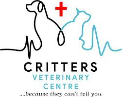

رعاية خبيرة لمجموعة واسعة من الحيوانات
عيادة كريترز البيطرية في يولا هي عيادة بيطرية شاملة تقدم رعاية طبية خبراء لمجموعة واسعة من الحيوانات، بما في ذلك الحيوانات الأليفة والحيوانات الصغيرة في المزارع والأنواع الغريبة. فريقنا مدرب للتعامل مع مجموعة متنوعة من الحالات، من فحوصات الصحة الروتينية للقطط والكلاب إلى علاج الحالات الأكثر تعقيدًا في الحيوانات الأخرى. نحن ملتزمون بتقديم رعاية شخصية ومتعاطفة، والتأكد من أن كل حيوان يدخل أبوابنا يحصل على الاهتمام والعلاج الذي يستحقه. عيادتنا مكرسة لتعزيز صحة الحيوانات ورفاهيتها في المجتمع.